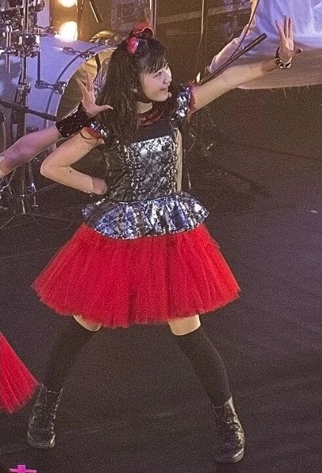

Foto di gruppo: BABYMETAL / AMUSE. Ritratti dal vivo: DragonFury, CC BY-SA 4.0; crediti sotto ogni profilo.
KAWAII METAL · HEAVY METAL
La potenza del metal. Una voce tutta loro.
Voce melodica, coreografie ed energia heavy metal convivono nel mondo di BABYMETAL. La formazione attuale riunisce SU-METAL, MOAMETAL e MOMOMETAL; i dischi precedenti raccontano anche altre fasi del progetto. METAL FORTH amplia gli incontri internazionali con ospiti come Poppy, Electric Callboy e Tom Morello. Gli album audio dal vivo e la raccolta 10 BABYMETAL YEARS sono distinti dai cinque album originali.
Profili verificati il 27 ottobre 2026. I tre ritratti dal vivo sono stati scattati ad Amsterdam nel maggio 2025. I dischi e i video storici possono appartenere a formazioni precedenti.
BABYMETAL / SPECIALE · LA FORMAZIONE ORIGINALE
YUIMETAL. Una parte della storia.
Yui Mizuno · 水野由結 · Scream e danza nelle BABYMETAL originali.

Foto storica: Londra, 8 novembre 2014. Fuguito · Wikimedia Commons · CC BY-SA 3.0. Anteprima acquisita, rifilata e convertita in WebP.
EX COMPONENTE · 2010–2018
Da Sakura Gakuin al mondo del metal.
Nata il 20 giugno 1999 nella prefettura di Kanagawa, Yui Mizuno è conosciuta con il nome d’arte YUIMETAL. Fa parte della prima formazione di BABYMETAL insieme a SU-METAL e MOAMETAL, e del percorso di Sakura Gakuin, da cui si diploma nel marzo 2015.
La sua presenza scenica, le risposte vocali e le coreografie appartengono al linguaggio del trio originale. Per ritrovarla in musica si parte dai primi due album, BABYMETAL e METAL RESISTANCE, e dalle registrazioni dal vivo di quel periodo. È un approfondimento storico: Yui non è presentata come componente della formazione attuale.
NOTIZIE DOCUMENTATE / CONTROLLO DEL 27 OTTOBRE 2026
Cosa sappiamo oggi.
La fine del rapporto con Amuse.
ORICON e TV Asahi riportano l’annuncio dell’agenzia: il contratto termina il 30 settembre 2025, rispettando il desiderio di Yui di allontanarsi dal mondo dello spettacolo e vivere secondo il proprio ritmo. Il vecchio profilo Amuse non è più consultabile; la notizia è documentata dagli articoli pubblicati all’epoca.
Nelle fonti consultate non ho trovato annunci ufficiali di un suo rientro nelle BABYMETAL o di nuove uscite soliste. Il profilo ufficiale del gruppo elenca SU-METAL, MOAMETAL e MOMOMETAL. Questo riepilogo non viene aggiornato automaticamente.
Inizia il percorso con Sakura Gakuin e la prima formazione di BABYMETAL.
2014
Esce l’album BABYMETAL, prima tappa discografica per riscoprire il trio originale.
2015
Conclude l’esperienza in Sakura Gakuin e prosegue con BABYMETAL.
2016
METAL RESISTANCE porta avanti la discografia della formazione originale.
19 ottobre 2018
Viene annunciata la sua uscita dalle BABYMETAL, dopo un periodo di assenza per motivi di salute. Non sono state rese pubbliche diagnosi da riportare qui. Comunicato ripreso da Kerrang! ↗
30 settembre 2025
Termina il contratto con Amuse, come riportato dalla stampa giapponese.
Tre brani per tornare al primo periodo.
Una selezione d’ascolto dai due album originali. I collegamenti «Cerca» non garantiscono una particolare registrazione live.
Fonti biografiche: JOYSOUND / Natalie, ORICON e comunicato del 2018 ripreso da Kerrang!. Titoli, anni ed edizioni musicali sono documentati nelle schede degli album qui sotto. Lo speciale riguarda l’attività pubblica: non riporta voci sulla vita privata o ricostruzioni non confermate.
UN PRIMO ASCOLTO
Premi play.
Video incorporati o collegati nel sito ufficiale dell’artista o della sua etichetta.
IL VIAGGIO, DISCO PER DISCO
La discografia.
39 pubblicazioni audio raggruppate, con edizioni alternative quando la scaletta cambia.
Caricamento della discografia…
Fonti, edizioni e collegamenti d’ascolto
Verifica del 27 ottobre 2026. Archivio del catalogo digitale giapponese restituito da Apple Music, integrato con le pubblicazioni ufficiali indicate nelle schede. Non è un censimento di ogni confezione fisica, vinile, DVD, Blu-ray o edizione regionale. Date e immagini seguono l’edizione consultata e possono differire dal CD originale.
Album originali, raccolte, EP, singoli e audio live sono distinti. Le versioni con identica scaletta non sono conteggiate come dischi diversi; le edizioni con tracce diverse restano selezionabili. I singoli con B-side e strumentali rimangono singoli. Gli album video non diventano album audio. I dettagli non disponibili sono dichiarati.
I video in evidenza provengono dai siti ufficiali. Nelle scalette «Cerca» apre una ricerca per titolo e artista su YouTube o Spotify, senza garantire la registrazione esatta o la disponibilità in Italia. Non sono riprodotti testi di canzoni.